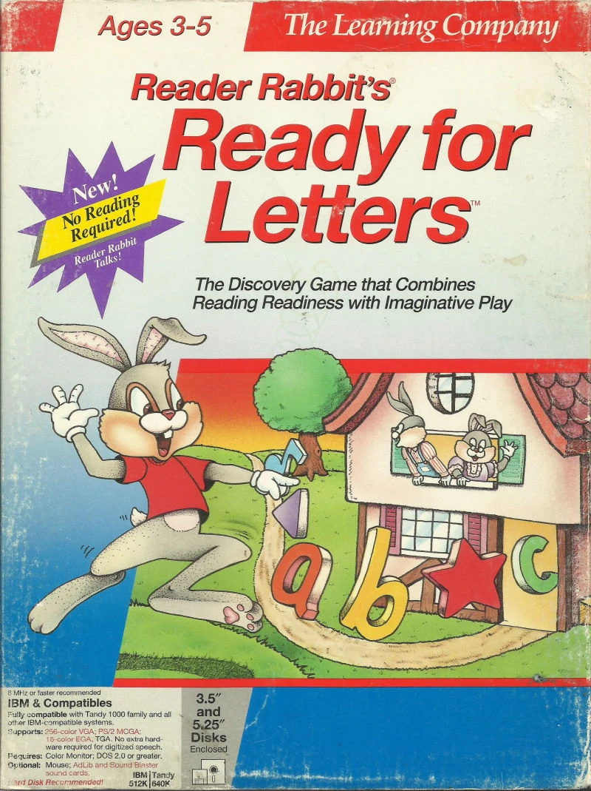

Reader Rabbit and the Fabulous Word Factory ( 1983 - 1997 ) 1ère série
Il y a eût plusieurs version EN ANGLAIS de ce jeu :

- Apple II ( la version originale, le tout premier Rabbit Reader ) en 1983
- Atari 8-Bit ( et Commodor 64 ) en 1984
- Apple IIGS ( la première version avec de l'audio pour la voix de Lapin Malin ) en 1989
- DOS ( la version qui aura apporté un curseur gràce à la tablette graphique "Koala Pad" pour naviguer dans les 4 activités aini que des cinématiques ) en 1991
- Deluxe ( sur Macintosh et Windows 3.x , il reprend le design du Lapin Malin de "Interactive Reading Journey" mais avec une salopette ) en 1994
- Windows ( la dernière version apportant le design du Lapin Malin épuré ) en 1998
Je tiens à dire que la version DOS est compatible AppleII,TRS-80 Color Computer, Atari 8-bit, Commodore 64, IBM PC,... et que la tablette graphique KoalaPad offre un curseur jusqu'à la présence d'une souris avec la version Windows.

Sources
Un Walktrough de la toute première version :
Le Wikipédia de Reader Rabbit : https://en.wikipedia.org/wiki/Reader_Rabbit
Tout sur les version disquette : https://www.mobygames.com/game/reader-rabbit/techinfo
Tout sur la version "Deluxe" : https://readerrabbit.fandom.com/wiki/Reader_Rabbit_1_Deluxe
Tout sur la dernière version : https://readerrabbit.fandom.com/wiki/Reader_Rabbit%27s_Reading_1
Math Rabbit ( 1986- 1999 )
Il y a eût plusieurs version EN ANGLAIS de ce spin-off :

- Apple II et DOS en 1986
- Deluxe ( pour DOS, Macintosh et Windows 3.x ) en 1993
- MAC et Windows ( renommé "Reader Rabbit's Math 1" ) en 1997
- Windows ( renommé ""Reader Rabbit's Math Ages 4-6" et utilisant le "A.D.A.P.T. Learning Technology" ) en 1999
le "A.D.A.P.T. Learning Technology" est un CD Bonus pour faire le lien avec les jeux terminés et donc la collection de diplome. Il permet l'impression de ces derniers et permet aussi de voir quels sont les jeux terminés et pas terminés.

Les sources
Le Wikipédia de Math Rabbit : https://en.wikipedia.org/wiki/Math_Rabbit
Un gameplay de la version "Math Rabbit" de 1986 :
Writer Rabbit (1986-1994)
Il y a eût plusieurs version EN ANGLAIS de ce spin-off :

- Apple II et DOS en 1986
- MS-DOS ( pour DOS, renommé "Reader Rabbit 3" ) en 1993
- MAC et Windows ( renommé "Reader Rabbit 3 Deluxe!" mais qui a juste quelques corrections ) en 1994
Il est à remarquer que les spin-offs commencent à se raccrocher à "Rabbit Reader" dans les années 90 au lieu de se focaliser sur un lapin qui fait des mathématique ou qui écrit. Là où la version originale mettait en avant le lapin qui prépare une fête, la version Deluxe a changé le contexte et la mise en forme pour coller à la série Reader Rabbit en le faisant travailler en tant que journaliste pour le journal de Wordcity.

Sources
On a un Walkthrough de la version DOS
Reader Rabbit 2 (1991 - 1997) 1ère série
Il y a eût plusieurs version EN ANGLAIS de la suite canon de Reader Rabbit and the Fabulous Word Factory :
- DOS en 1991
- Deluxe ( pour Windows 3.x et Macintosh ) en 1994
- MAC et Windows ( renommé "Reader Rabbit's Reading 2" ) en 1997
on remarque , pour la première fois, aucune version AppleII. On n'a plus de version 8-Bit... ou plutôt de version à coder soi-même car le DOS ( pour Disk Operating System ) permet d'avoir un accès au support disquette donnant un boost de mémoire aux appareils compatibles... dont l'AppleII, le Commodor 64, l'Atari et les PC.

Sources
On a un Walkthrough de la version originale :
Le Wikipédia du DOS : https://fr.wikipedia.org/wiki/Disk_operating_system
Le Wikipédia du jeu : https://en.wikipedia.org/wiki/Reader_Rabbit_2
Reader Rabbit's Ready for Letters (1992 - 1994)
Il y a eût plusieurs version EN ANGLAIS de ce jeu dérivé de la série :
- MS-DOS en 1992
- Mac ( amélioration audio de la version DOS...étrangement, ils ont gardé les graphismes de la version DOS ) en 1993
- Windows 3.x en 1994
Je tiens à faire remarquer que dans ce jeu, on voit la famille de Reader Rabbit ET qu'il n'y a aucun changement graphique selon les versions. Probablement dû à une sur-production de remake durant cette période et une facilité de conversion avec la disquette du MS-DOS.

Sources
On a un Walkthrough de la version MAC :
Le Wikipédia du DOS : https://fr.wikipedia.org/wiki/Disk_operating_system
Le Wikipédia du jeu : https://en.wikipedia.org/wiki/Reader_Rabbit%27s_Ready_for_Letters
Reader Rabbit 3 (1993 - 1994) 1ère série
C'est La version DOS (1993) et Windows/Mac (1994) de Writer Rabbit.
Cet épisode met donc fin à la première série originale où Reader Rabbit travaille à Wordcity ( commençant à l'usine des mots, poursuivant en tant que mineur,pécheur,jardinier et fermier pour terminer en journaliste ).
Les sources
On a un Walkthrough de la version DOS :
Reader Rabbit's Interactive Reading Journey (1994 - 1999) Premier Lapin Malin 1ère apparition de Mimi la Souris, Sam le Lion, ...
C'est le premier Lapin Malin sortit en France en 1994 gràce à TLC-Edusoft ( La fusion de "The Learning Company" et "Edusoft").
Il y a eût plusieurs versions du jeu :Il y a eût plusieurs versions :
- Windows et Mac en 1994
- Une version "Reader Rabbit's Interactive Reading Journey 1" ayant juste un "1" en plus en prévision de la suite en 1997 ( aussi nommé "Reader Rabbit's Interactive Reading Journey For Grades K-1" )
- "Reader Rabbit Reading 4-6 " en 1998
- Une version personnalisée en 1999
Quand on dit "version personnalisée", on parle de version utilisant le système A.D.A.P.T. pour permettre au logiciel d'y être répertorier.
Pourquoi une version Française ?
La version Française est le résultat d'un jeu de rachat en plusieurs temps ( la source ici ) :
- Dans les années 70, il y a eût la création de la société CEDIC-NATHAN spécialisée dans les logiciels éducatifs en France.
- En 1994, le français Michel Bussac rachète Nathan Logiciels ( le nom qu'avait pris CEDIC-NATHAN en 1989 ) et renomme le studio "Edusoft".
- En 1995, The Learning Company se fait racheter par Softkey, un autre groupe américain qui publiait et distribuait des CD-ROMs de jeux dans les années 80 et 90.
- Malgré des ventes de jeux ludo-éducatifs sous format CD-ROM ayant de bonnes ventes ( d'après la presse de l'époque ), Michel Bussac cède les Edusoft à Softkey en 1996.
C'est donc gràce à cette fusion chez Softkey ( qui gardera le nom de "The Learning Company" ) que TLC-Edusoft s'occupera de la version française de Reader Rabbit avec les dévellopeurs français provenant du studio CEDIC-NATHAN.
Il est à précisé que c'est le premier jeu mettant en avant Sam le Lion et Mimie la souris.
Les sources
On a un Walkthrough de la 3ème version ( qui ressemble à toutes les autres versions, c'est juste le même contenu mais le titre change ):
La page Wikipédia du jeu en anglais : https://en.wikipedia.org/wiki/Reader_Rabbit%27s_Interactive_Reading_Journey
Reader Rabbit's Reading Development Library 1 (1994 - 1997) 2ème série
Il y a eût 2 versions :
- Windows 3x en 1994
- Windows 95 Mac en 1997
Les graphismes sont les mêmes que Interactive Reading Journey / Voyage au Pays de la lecture
Les sources
On a un Walkthrough de la version de 1997 :
La page Wikia du jeu en anglais : https://readerrabbit.fandom.com/wiki/Reader_Rabbit%27s_Reading_Development_Library_1
Reader Rabbit's Reading Development Library 2 (1994 - 1997) 2ème série

Il y a 2 versions :
- Windows 3.x en 1994
- Windows 95 et Mac en 1997
Les sources
On a un Walkthrough de la version de 1997
La page Fandom du jeu en anglais : https://readerrabbit.fandom.com/wiki/Reader_Rabbit%27s_Reading_Development_Library_2
Reader Rabbit's Reading Development Library 3 (1995 - 1997) 2ème série

Il y a 2 versions :
- Windows 3.x en 1995
- Windows 95 et Mac en 1997
Les sources
On a un Walkthrough de la version de 1997
La page Fandom du jeu en anglais : https://readerrabbit.fandom.com/wiki/Reader_Rabbit%27s_Reading_Development_Library_3
Reader Rabbit's Reading Development Library 4 (1996 - 1997) 2ème série

Il y a 2 versions :
- Windows 3.x en 1996
- Windows 95 et Mac en 1997
Les sources
On a un Walkthrough de la version de 1997
La page Fandom du jeu en anglais : https://readerrabbit.fandom.com/wiki/Reader_Rabbit%27s_Reading_Development_Library_4
Reader Rabbit and Friends: Let's Start Learning! (1995 - 2000) apparition de Poney Magique


Il y a plusieurs versions :
- Windows 3.x en 1995
- Windows 95 et Mac sous le nom "Reader Rabbit Preschool" en 1997
- La version Carnaval sous le nom "Reader Rabbit Preschool" en 1998
- Une nouvelle version sous le nom "Leap Ahead! Preschool"" en 1999
- Une version personnalisée pour la compilation "Learning Creations" en 2000
Il est intéressant de mettre en avant que la version Carnaval perd l'histoire de l'apparition du Poney Magique pour privilégier une histoire autour d'un cirque afin de donner du contexte aux mini-jeux. Les versions qui arriveront après reprendront l'histoire de la clé et du manège à l'origine du Poney Magique.

Mis à part la version Carnaval, les versions qu'on peut appeler "Carousel" montre bien l'évolution des graphismes sur 3 versions
Les sources
On a un Walkthrough de la version de 1996, la version 1.1 de l'originale
La page Fandom du jeu en anglais : https://readerrabbit.fandom.com/wiki/Reader_Rabbit_and_Friends:_Let%27s_Start_Learning!